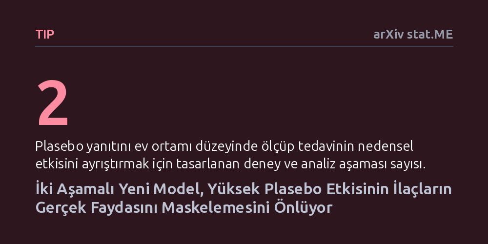

TIP · arXiv stat.ME · 2026-09-11
Araştırmacılar, klinik deneylerde yüksek plasebo etkisinin ilaçların gerçek faydasını gizlemesi sorununa karşı iki aşamalı yeni bir istatistiksel yöntem geliştirdi. Bilgisayar simülasyonlarıyla test edilen model, hastaların ev ortamındaki plasebo yanıtlarını hesaba katarak tedavinin gerçek nedensel etkisini ortaya çıkarıyor.
Yüksek plasebo etkisi yüzünden etkisiz zannedilerek elenme riski taşıyan faydalı ilaçların gerçek klinik değerini kurtarmayı ve doğru tespit etmeyi sağlar.

Yeni bir ilacın onay alabilmesi için standart yöntem, ilacın etkisiz bir maddeyle (plasebo) kıyaslandığı çift-kör klinik deneylerdir. Ancak özellikle ağrı, psikiyatri veya nöroloji gibi alanlarda hastaların deneye katılmaktan, hekim ilgisinden ve iyileşme beklentisinden kaynaklanan plasebo yanıtı aşırı yükselebilir.
Bu durum, ilacın saf biyolojik etkisini görünürde küçülterek 'tedavi niyeti analizi' (ITT) sonuçlarını aşağı çeker. Sonuç olarak, gerçek hayatta hastaların düzenli kullanımında işe yarayabilecek faydalı bir ilaç, klinik deneyin yapay ortamındaki yüksek plasebo tepkisi nedeniyle başarısız damgası yiyebilir.
Araştırmacılar bu engeli aşmak için iki aşamalı yeni bir nedensel çıkarım çerçevesi geliştirdi. İlk aşamada, hastaların evde kendi kendilerine ilaç aldıkları rutin ortamı taklit eden, tek-kör bir plasebo ön süreci uygulanıyor. Bu adım, deneme ortamının şişirdiği yapay beklentileri kontrol altına alarak hastanın gerçekçi temel plasebo eğilimini ölçmeyi amaçlıyor.
İkinci aşamada ise klasik çift-kör rastgele deneme fazına geçiliyor. Burada, ilk aşamadan gelen beklenen plasebo düzeyleri ve diğer hasta özellikleri istatistiksel olarak indirgenerek her hasta alt grubundaki koşullu ortalama tedavi etkisi (CATE) matematiksel olarak modelleniyor.
Geliştirilen yöntem, ikinci aşamadaki ayrıntılı tedavi etkilerini ilk aşamadaki gerçekçi plasebo dağılımıyla bütünleştirerek 'standartlaştırılmış nedensel tedavi etkisini' hesaplıyor. Böylece araştırmacılar, yüksek plasebo yanıtının ilacın faydasını ne kadar eksik gösterdiğini matematiksel bir farkla teorik olarak formüle etti.
Yazarlar, önerdikleri istatistiksel yaklaşımın performansını ve geçerliliğini geniş kapsamlı veri simülasyonlarıyla sınadı. Simülasyonlar, yöntemin geleneksel yöntemlere kıyasla ilacın gerçek faydasını sapmasız ve güvenilir biçimde yakalayabildiğini ortaya koydu.
Bu çalışma, klinik deneylerde plasebonun sadece çıkarılması gereken bir gürültü değil, hastanın gerçek hayat koşullarına göre modellenmesi gereken bir etki değiştirici olduğunu gösteriyor. Deney tasarımında yapılacak bu tür bir yapısal düzenleme, klinik araştırmaların maliyetini düşürme ve gereksiz başarısızlıkları önleme potansiyeline sahip.
Yine de yöntemin hayata geçmesi için klinik araştırmacıların protokollerini iki aşamalı bu yeni kurguya göre uyarlamaları ve gerçek hasta verileriyle yöntemi doğrulamaları gerekiyor.